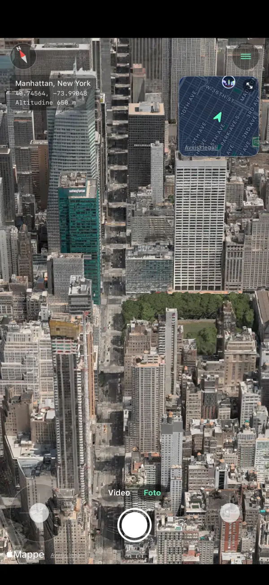
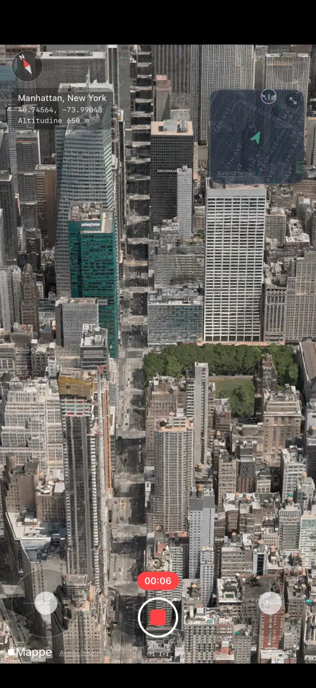
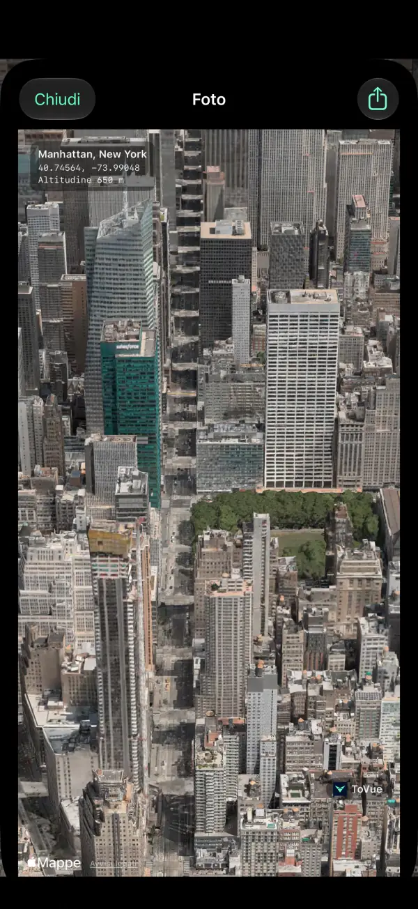
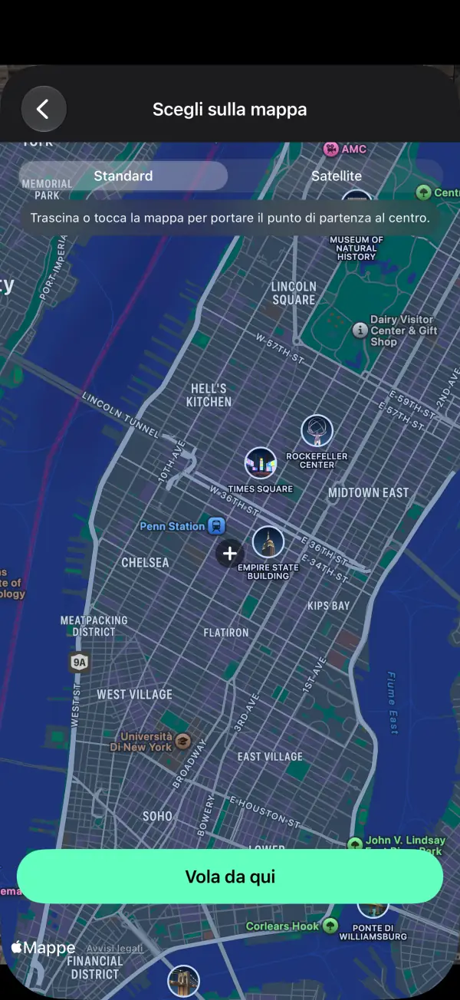
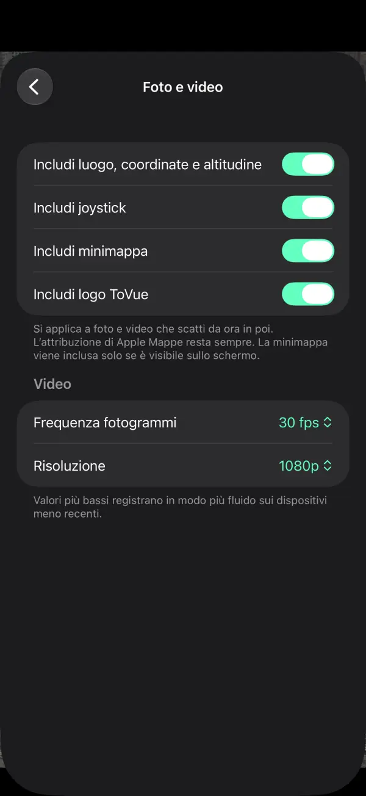

Sorvola mappe 3D come un drone.
Vola sopra le città del mondo su iPhone e iPad.
Conserva la vista in foto o in video: solo la mappa, senza i comandi.
 Gratis · Nessuna registrazione · Nessun accesso alla posizione
Gratis · Nessuna registrazione · Nessun accesso alla posizioneCosa puoi fare
Vola con gli stick e conserva la vista esattamente come la vedi.
Vola liberamente
Sali, ruota e avanza con due stick sullo schermo, o con un dito solo nella modalità a una mano.
Minimappa
Vedi dove sei e in che direzione guardi. Toccala per scegliere un nuovo luogo sulla mappa.
Registra video
Passa da Foto a Video come nell'app Fotocamera e registra il tuo volo.
Foto della sola mappa
Cattura la vista senza i comandi, con luogo, coordinate e altitudine se vuoi.
Vai ovunque
Cerca o scegli un punto sulla mappa e inizia subito a volare da lì.
11 lingue
Italiano, inglese, giapponese, cinese, coreano e altre. Per iPhone e iPad.
Screenshot





Prezzi
Tutto è gratuito. Preferisci senza pubblicità? Acquista una volta sola.
Base
- Tutte le funzioni di volo, foto e video
- Un banner e un annuncio a schermo intero dopo lo spostamento
- Logo ToVue su foto e video
Rimuovi pubblicità e logo ToVue
- Un solo acquisto, non un abbonamento
- Nessuna pubblicità
- Possibilità di togliere il logo ToVue da foto e video
Da sapere
- ToVue è un visualizzatore di mappe virtuale. Non comanda un drone reale e non è uno strumento di navigazione o di pianificazione del volo.
- Gli edifici e il terreno 3D provengono da Mappe di Apple e il livello di dettaglio varia a seconda della zona.
- Serve una connessione a Internet. ToVue non usa mai il GPS e non chiede mai la tua posizione.
- L'attribuzione di Mappe di Apple resta sempre su foto e video.
Vai a catturare la vista dal cielo.
Gratis · Nessuna registrazione · Nessun accesso alla posizione